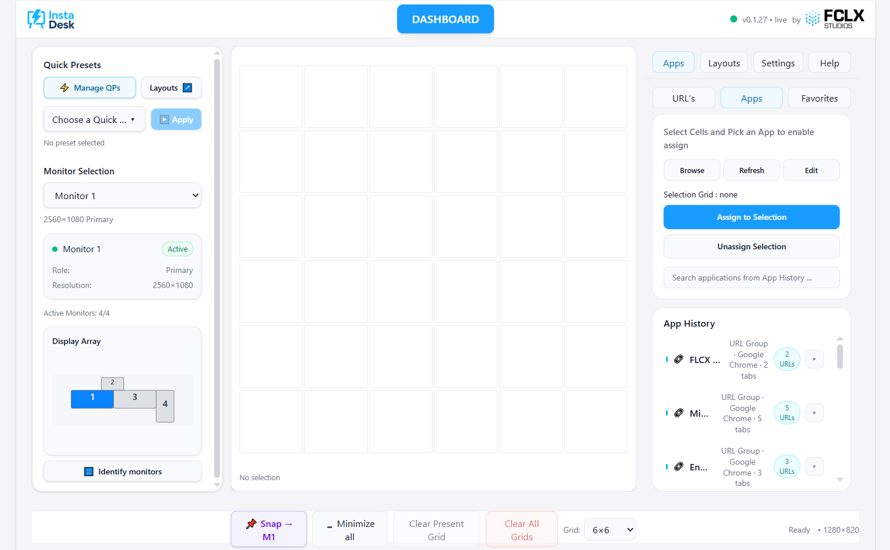
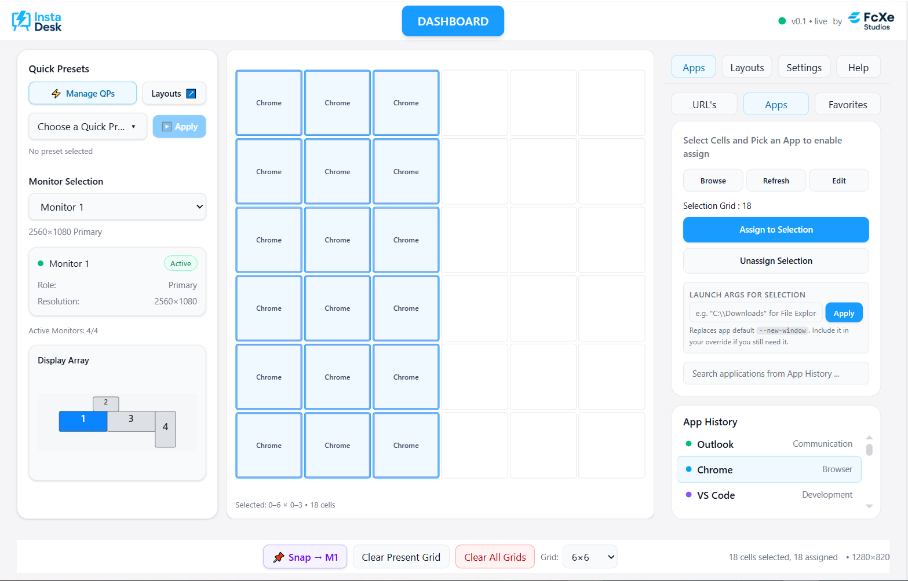
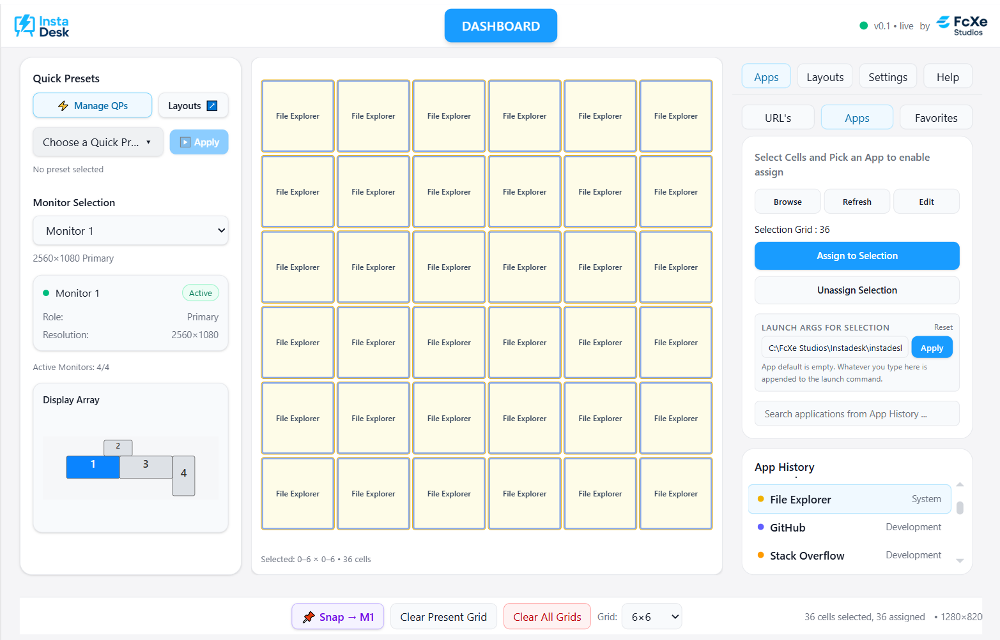
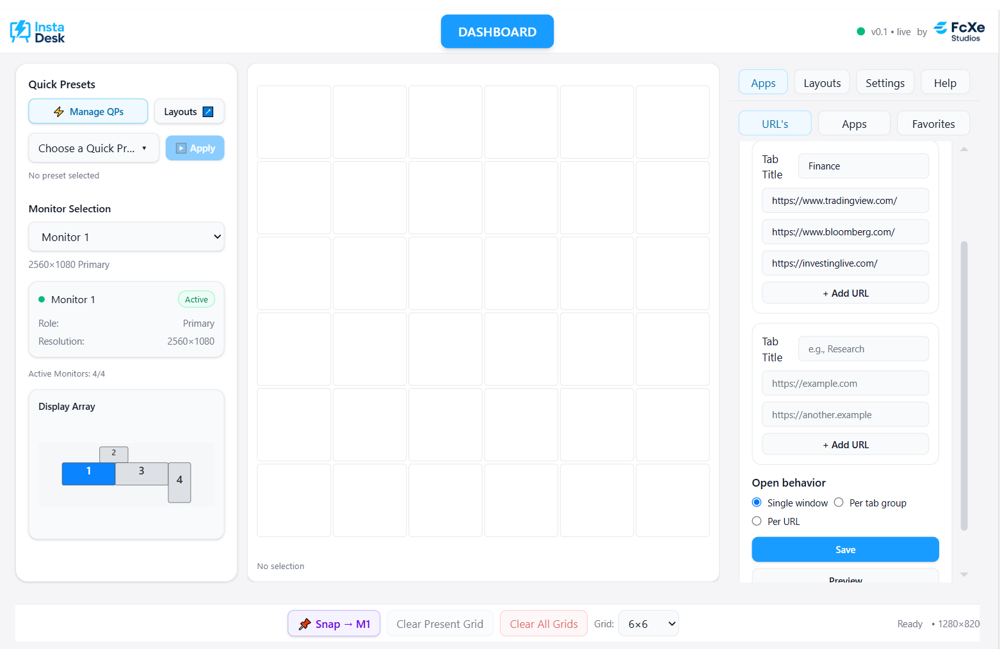
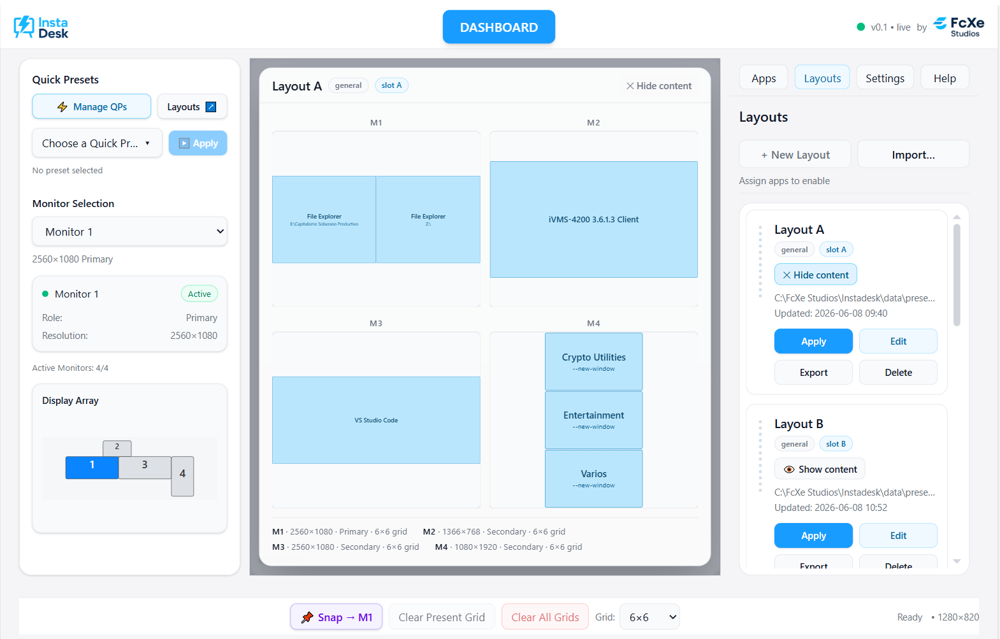
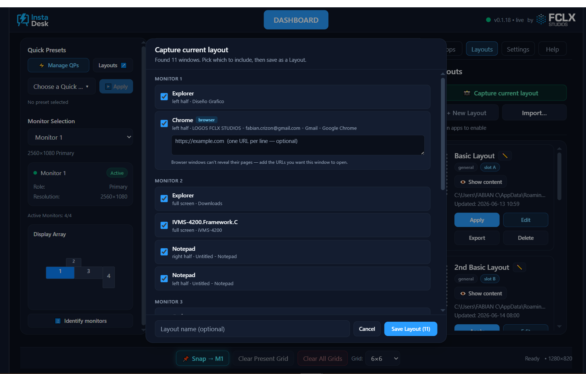
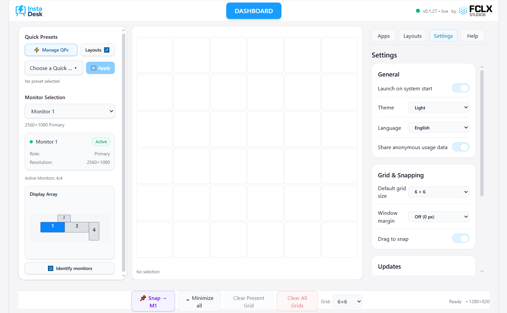

Multi-monitor launcher & window-tiling — User Manual
FCLX Studios · v0.1.27 · English
1 · What is InstaDesk?
InstaDesk turns the tedious morning ritual — opening the same apps and dragging every window into place across several monitors — into a single click.
You arrange apps on a visual grid for each monitor, save that arrangement as a Layout, and from then on one Apply launches every app and tiles it exactly where you put it. You can keep many layouts (work, design, trading, streaming…), bundle several into a Quick Preset, trigger them with a keyboard shortcut, ad-hoc Snap a window into place, or capture a layout straight from however your screen looks right now.
Is it hard? No — the learning curve is quick. But InstaDesk is a power tool with real depth (per-monitor grids, custom launch arguments, browser tab groups, global hotkeys). This manual walks every feature; the in-app Help tab is the short version.
2 · Core concepts
Five ideas are all you need:
Monitor
You arrange one display at a time. The Monitor selector (left panel) chooses which; the Display Array shows how your screens are physically laid out. The Identify monitors button flashes each screen's number so you always know which is which.
Grid & cells
Each monitor is divided into a grid of cells (e.g. 6×6). You can set a different grid density per monitor.
Region
A rectangular block of cells you assign one app to. A region can be a single cell or a wide band — for example the left half of a monitor.
Layout
A saved set of regions across all your monitors — the heart of InstaDesk. Apply it to launch and tile everything.
Quick Preset
A bundle of several Layouts you apply together in one click (or one hotkey).
3 · The interface, at a glance

Left panel — Quick Presets, the Monitor selector, the Display Array, and the Identify monitors button.
Centre — the workspace grid for the selected monitor, where you select cells and see assignments.
Right panel — tabs for Apps, Layouts (incl. Capture current layout), Settings, and Help.
Bottom bar — Snap, the Minimize all / Restore all toggle, Clear Present Grid, Clear All Grids, and the per-monitor Grid size.
Top bar — the InstaDesk logo, the current version (top-right), and the FCLX Studios mark.
4 · Quick start: your first layout
Pick a monitor in the left panel.
In the centre grid, drag across cells to select a region (say, the left half).
Open the Apps tab, choose an app (e.g. Chrome), and click Assign to Selection.
Select another region and assign a second app. Repeat for other monitors via the Monitor selector.
Open the Layouts tab → + New Layout, give it a name, and save.
Click Apply on the layout card — InstaDesk launches each app and tiles it into place.

In a hurry? Already have your windows where you want them? Skip straight to section 8 and let InstaDesk capture the layout for you.
5 · The grid & assigning apps
Selecting & assigning
Drag across cells to select a rectangular region, then click Assign to Selection in the Apps tab. Use Unassign Selection to clear it. Regions must be rectangles.
Grid size (per monitor)
The Grid selector in the bottom bar sets the density of the current monitor — 6×6 for broad zones, 10×10 for fine control. Each monitor remembers its own size. Changing it on a monitor that already has apps asks for confirmation, since it re-shapes that grid.
Custom launch arguments
Give a cell its own launch arguments in the Apps tab — for example a folder path for File Explorer, so two regions open two different folders of the same app. This is how you place several distinct windows of one program.

Clearing
Clear Present Grid empties the current monitor; Clear All Grids empties every monitor (with a confirmation). Saved Layouts are never affected by clearing.
6 · Apps, URLs & Favorites
The right-panel Apps tab has three sub-tabs.
Apps
Pick from the built-in catalog, or click Browse… to add any program's .exe. Added programs are remembered in App History for reuse.
URLs — the URL Builder
Build a group of browser tabs that open together in their own window:
Choose a Browser. Click + Add Browser to pick from the browsers detected on your PC, or browse for a browser's .exe.
Add a Tab Group, give it a title, and add the URLs.
Set the open behavior (one window, per group, or per URL) and Save. The group then behaves like any app you can assign to the grid.

Favorites
Keep your most-used apps and URLs one click away.
7 · Layouts
A Layout stores which apps go where, across all your monitors. When you save with + New Layout, give it a name you'll recognise — for example “Work”, “Trading”, or “Editing”. You can keep up to 26 saved Layouts at a time.
Apply — launches and tiles everything in the layout.
Edit — reopens the layout on the grid so you can rearrange and re-save.
Rename (✎) — give a layout a new name; its contents stay the same.
Export / Import — share a layout as a .json file (its name travels with it).
If a saved app has no program or URL configured, only that one app is skipped on save (with a warning) — the rest of the layout still saves normally.

8 · Capturing a Layout from your screen
Instead of building a layout cell by cell, you can arrange your windows however you like — by hand or with Snap / Drag-to-snap — and have InstaDesk read the screen and build the Layout for you.
Arrange your windows across your monitors.
Open the Layouts tab and click Capture current layout.
A review window lists every window it found, grouped by monitor. Tick the ones to include (apps it can't identify are flagged and skipped).
For each browser window, paste the URLs you want it to reopen (one per line) — a browser can't reveal its own open pages, so you supply them here.
Give the layout a name and Save. It becomes a normal Layout you can Apply, Edit, rename, or export.

Good to know: apps that run as administrator (such as some CCTV clients) are identified and included. Windows you placed freely snap to the nearest grid region. Each captured browser window reopens as its own window with the URLs you added as tabs.
9 · Quick Presets
A Quick Preset bundles several Layouts so you can apply them all together with one click — ideal for a full multi-monitor workspace assembled from reusable pieces. You can keep up to 26 Quick Presets, and apply the first nine with a keyboard shortcut.
Click Manage QPs in the left panel.
Create a preset and add the Layouts it should include.
Back on the main screen, pick the Quick Preset and click Apply.
10 · Snapping a window — Snap & Drag-to-snap
Snapping places a single, already-open window into a region — no Layout required. There are two ways.
Snap (the grid popup)
Click Snap → M1 in the bottom bar (the number is the active monitor).
A grid popup appears on that monitor.
Click a region; the window you last used snaps into it.
Drag-to-snap (hold Shift and drag)
Turn this on in Settings → Grid & Snapping → Drag to snap. Then, on any window:
Hold Shift and drag the window.
A translucent highlight shows the zone it will land in — edges = halves (left, right, top, bottom), corners = quadrants, centre = maximize.
Release to snap it there. Works on every monitor.
[ Screenshot to add: drag-to-snap — a window mid-drag with the zone highlight showing ]
Some apps enforce their own position (certain CCTV / video tools) and may refuse to be moved.
Minimize all / Restore all
The bottom Snap bar also has a one-click toggle that works like a reliable “Show Desktop”:
🗕 Minimize all hides every open window across all your monitors at once.
Click again — the button becomes 🗖 Restore all — to bring each window back to the exact position and size it was in before. It does not maximize them full-screen; each returns to the frame it was in.
Windows that run as administrator (for example some CCTV clients such as iVMS-4200) are left untouched, and InstaDesk tells you how many it skipped.
11 · Global hotkeys
InstaDesk responds to these shortcuts from anywhere — even when its window isn't focused:
Shortcut
Action
Ctrl + Alt + D
Show / focus the InstaDesk dashboard
Ctrl + Alt + S
Snap the active window (opens the Snap grid)
Ctrl + Alt + 1 … 9
Apply Quick Preset 1–9
The Show and Snap shortcuts are rebindable in Settings → Global shortcuts — click the shortcut and press your preferred combination (it must include Ctrl, Alt, or the Windows key).
12 · Monitors, Identify & the Display Array
The Monitor selector (left panel) chooses which display you're arranging. The Display Array beneath it shows your screens in their real physical positions, each with its number.
Click Identify monitors to flash a large number on each physical screen for a few seconds — exactly like Windows' own Identify. The number shown is the same one InstaDesk uses everywhere: the tile in the Display Array, and the monitor a Layout targets.
[ Screenshot to add: identify-monitors — the Display Array with the Identify monitors button, and/or the big numbers shown on the physical screens ]
13 · Settings
The Settings tab (right panel) collects InstaDesk's preferences:
Theme — Light, Dark, or System.
Language — English or Español.
Launch on system start — open InstaDesk automatically when you sign in (on by default; turn it off here).
Default grid size — the size new / cleared monitors start at.
Window margin — a bezel-aware gap so tiled windows don't sit under your monitor frames.
Drag to snap — enable the hold-Shift-and-drag snapping described in section 10.
Global shortcuts — view and rebind the keyboard shortcuts.
Updates — check for and install new versions (see section 14).
Share anonymous usage data — optional, on by default; sends only aggregate, non-personal diagnostics to help improve InstaDesk. No file names, URLs, or screen contents are ever sent. Turn it off any time.

14 · Staying up to date
InstaDesk keeps itself current with signed automatic updates:
It checks shortly after launch and periodically while open. When a new version is available, a slim “InstaDesk X.Y.Z is available” bar appears at the top of the dashboard with Install & restart (or Later).
You can also check any time in Settings → Updates → Check for updates — handy if you'd rather not wait for the automatic check.
Updates are cryptographically signed, so only genuine InstaDesk releases can install.
The current version is always shown in the top-right of the header and at the bottom of the Help tab.
15 · Tips & troubleshooting
An app won't tile. Some apps (certain CCTV / video tools) place their own windows. Close and relaunch them, or leave them out of the layout.
Only one window opens. Single-instance apps (e.g. Outlook, Teams) open just one window; assigning them to several cells won't create copies.
A captured browser opened in an existing window. InstaDesk forces each browser window in a Layout to open separately — make sure you're on the latest version if you see them merge.
A shortcut won't launch. Windows shortcuts (.lnk) can't be launched directly — point to the real .exe in the Apps tab instead.
An app fails to launch. Check its path in the Apps tab and use Browse… to correct it.
My added browser disappeared / opened the wrong browser. Use + Add Browser and pick a detected browser (or browse to its .exe) so InstaDesk has its real program path.
A hotkey does nothing. Another app may already use that combination — rebind InstaDesk's in Settings → Global shortcuts.
Windows land in the wrong place. If you also run another window-snapping tool, it can fight InstaDesk and move windows after placement — close it so InstaDesk can do the job cleanly.
16 · Limits & capacities
At a glance, what InstaDesk can hold:
Item
Limit
Saved Layouts — multi-monitor
26
Saved Layouts — single-monitor
26
Quick Presets
26 (first 9 have a hotkey)
Grid density (per monitor)
4×4, 6×6, 8×8 or 10×10
Windows placed per monitor (one Layout)
up to the grid size — 36 at 6×6, 100 at 10×10
Monitors
every monitor Windows detects
Window margin (bezel padding)
0–16 px
Drag-to-snap zones
halves, quadrants, maximize — per monitor
URLs per group · Favorites
no fixed limit
Reached 26 saved Layouts? Delete one to free a slot, or combine related Layouts into a Quick Preset. Higher limits are planned for a future update if customers need them.